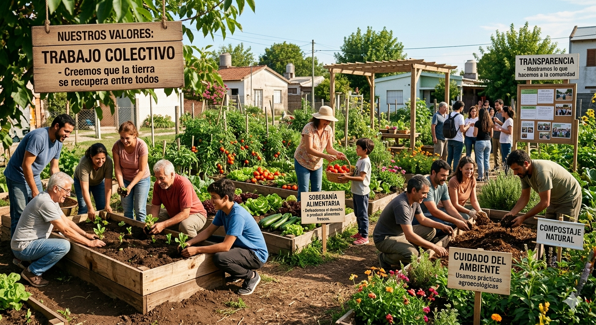

Nuestra Historia
Fundación Tierra Viva nació en marzo de 2021 en el barrio El Plátano, Hurlingham, con la recuperación de un terreno baldío. Impulsada por Marilina Ruiz y un grupo de vecinos comprometidos, la iniciativa transformó un espacio degradado por la basura en una huerta comunitaria y un punto de encuentro social.
Los vecinos se fueron sumando. Hoy, el proyecto incluye el intercambio dominical de semillas y meriendas colectivas basadas en la cosecha local.
Nuestra misión actual es replicar este modelo: transformar terrenos abandonados en oportunidades de desarrollo comunitario, trabajo colectivo y soberanía alimentaria.

Nuestros valores
- Trabajo Colectivo: Recuperamos la tierra entre todos de forma comunitaria.
- Soberanía Alimentaria: Producimos alimentos frescos y sanos para el barrio.
- Cuidado del Ambiente: Cultivamos a través de prácticas agroecológicas.
- Transparencia: Compartimos cada una de nuestras acciones con la comunidad.

El Corazón de la Fundación
Nuestro motor principal es promover la inclusión social de los sectores más vulnerables. Creemos que la educación y la capacitación mutua son las herramientas clave para lograrlo.
Detrás de cada metro cuadrado recuperado hay un equipo de voluntarios que pone el cuerpo, el conocimiento y el corazón para hacer realidad nuestra misión.
🌱 Fundadores y Coordinadores: Marilina Ruíz, Ignacio Rodrigues y Agustina Quintana.
¿Te gustaría ser parte de este equipo? ¡Dejanos tus datos en la sección de contacto!